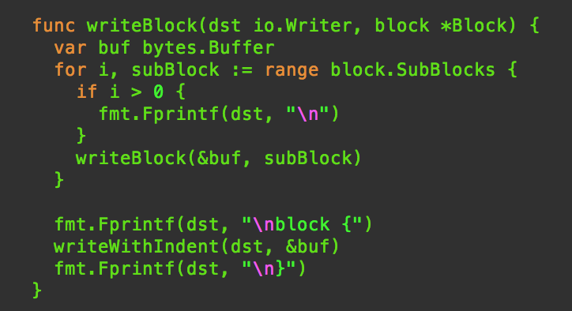

Notes On Generating Indented Code In Go
Notes On Generating Indented Code In Go

One thing that is different from generating, say, an email text, and a piece of code is the structure. Normally code is indented in blocks, and I just happen to see a lot of time and effort being spent on getting this right. Here’s how I do it.
Please note:
- If I were generating Go code, I’d just use
format.Sourcefor indents - this is just something I’ve come to think of a standard way for me to write code generators. YMMV
みんなのGo言語 https://amzn.to/2GwYPFF
The Go Programming Language https://amzn.to/2GtkTkl
Avoid text/template
Hold on, don’t kill me for saying this! But seriously, I just don’t think text/template is the easiest tool in the World to generated structured text.
This is because generating code usually requires a fair amount of logic and branching, and text/template is not meant to be used for templates that require a lot of logic within the template.
However cumbersome it may seem at first, I highly recommend using fmt.Fprint or the like. I promise you: it will be easier that way. Of course, you can use other functions, but I stick to fmt.Fprintf because I often need the formatting verbs such as %s and %d , and also I want other pieces of code to look similarly indented — so I try not to mix fmt.Fprintf with other functions such as io.WriteString et al even when I do not need the formatting verbs.
Don’t Keep State
I think the first rule that you should note is that keeping track of how many levels of indentation you should currently be using is … moot. DO NOT PASS indentLevel around!
// don't do this
func writeBlock(dst io.Writer, indentLevel int) {
// for each line that we write in this block...
for i := 0; i < indentLevel; i++ {
fmt.Fprintf(dst, " ")
}
fmt.Fprintf(dst, "actual line of code\n")
}
In the contrived example above, there seems to be just one line, so it’s not a big deal, but what if we needed to call other functions to generate code?
func writeBlock(dst io.Writer, indentLevel int) {
// This first line needs indentation
for i := 0; i < indentLevel; i++ {
fmt.Fprintf(dst, " ")
}
fmt.Fprintf(dst, "we indent this line\n")writeBlock(dst, indentLevel+1) // but don't indent this
}
The next block of code we call needs special treatment of NOT indenting.
In a complex situations, this quickly gets out of hand. You will need to constantly keep track of the level, and when you want to explicitly indent or not.
Recurse and Indent
Instead of keeping track indentation state, the simple rule you should use is to focus only on the indentation levels within the current block that you are generating.
For example, suppose this is what you want to generate:
const (
foo = "foo"
bar = "bar"
)
Then you know that the beginning of the block and the end of the block are the only two tokens that are not indented, and everything within it is indented.
fmt.Fprintf(dst, "const (\n")
for _, v := range variableDecls {
fmt.Fprintf(dst, " ") // indent
writeDecl(dst, v) // write x = y
}
fmt.Fprintf(dst, ")\n")
This works fine for things like writeDecl, which only generate one line per invocation. But what if you were calling into a function that generates multi-line blocks? For example, what if a block can contain more sub-blocks?
func writeBlock(dst io.Writer, b *Block) {
fmt.Fprintf(dst, "block {\n") // start a block
for _, subBlock := range b.SubBlocks {
fmt.Fprintf(dst, " ")
writeBlock(dst, subBlock)
}
fmt.Fprintf(dst, "}\n") // end block
}If you look closer, you will realize that this will only indent the first line of the sub-block, and everything afterwards will be off. That’s not what we want.
Instead I recommend that you use a temporary buffer to store sub-blocks of text, and apply indentation to that entire buffer:
func writeWithIndent(dst io.Writer, src io.Reader) {
scanner := bufio.NewScanner(src)
for scanner.Scan() {
fmt.Fprintf(dst, ` `) // indentation
fmt.Fprintf(dst, scanner.Text())
}
}func writeBlock(dst io.Writer, b *Block) {
fmt.Fprintf(dst, "block {\n") // start a blockvar buf bytes.Buffer
for _, subBlock := range b.SubBlocks {
writeBlock(&buf, subBlock)
}
writeWithIndent(dst, &buf) // write indented sub-blocks
fmt.Fprintf(dst, "}\n") // end block
}
Go’s io.Writer and io.Reader along with bytes.Buffer allows you to nicely implement this as above. You can accumulate the result of recursion into writeBlock in the intermediate buf variable, then write the result of indenting the whole thing to dst using writeWithIndent .
This way each block only needs to know where indentation occurs within it’s own block, and leave nested blocks to do its own thing. And you don’t even need to know how many levels of nesting you have!
Put New Lines In The Beginning
Last but not least: For all my previous examples I placed the \n character at the end of each line, but in reality, I don’t do this. I only did that because that is presumably what you are used to write.
Instead, I always put \n at the beginning of the line.
This is because what follows a block of text is the factor that decides how many new lines we must insert.
For example, think of a block that could contain zero or more declarations. There are at least three possible scenarios in this case.
First, the empty block.
foo {
}The block with only one declaration:
foo {
bar = "bar"
}The block with two or more declarations (in this example, we assume that each successive declaration needs one line between it and the previous one):
foo {
bar = "bar"baz = "baz"
}
If we write this using the new-line-before-each-line style, this is how we’d do it:
// generates `\nfoo = "bar"`
func writeDecl(dst io.Wrter, v *Variable) {
fmt.Fprintf(dst, "\n%s = %s", v.Name, strconv.Quote(v.Value))
}
func writeBlock(dst io.Writer, b *Block) {
fmt.Fprintf(dst, "\n%s {", b.Name) // `\nfoo {`var buf bytes.Buffer // buffer to store declarations
for i, v := range b.Variables {
if i > 0 {
fmt.Fprintf(&buf, "\n")
}
writeDecl(&buf, v)
}
writeWithIndent(dst, &buf)
fmt.Fprintf(dst, "\n}")
}
Here, notice that from the writeDecl ‘s PoV, it doesn’t need to know anything about its position, or how many new lines it needs to insert. It only knows that the declaration should each be written on its own line: so it inserts a new line before the declaration.
Instead, it’s the caller, writeBlock that knows you need an extra new line for each successive declaration, so it checks for the index i and inserts that extra new line before calling writeDecl.
So that’s the new-line-at-the-beginning trick. This allows you to separate out the concern of the that line of code that are just writing (that it needs to be on its own line) and the formatting of the surrounding block.
When you put this together with the other techniques that wrote in this article, you can create recursive code that indents and formats code nicely.
Hope this helps. Happy hacking!